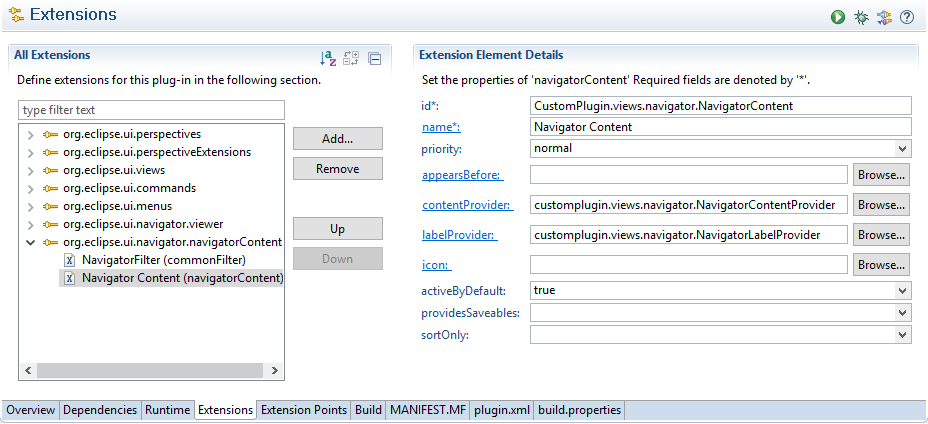
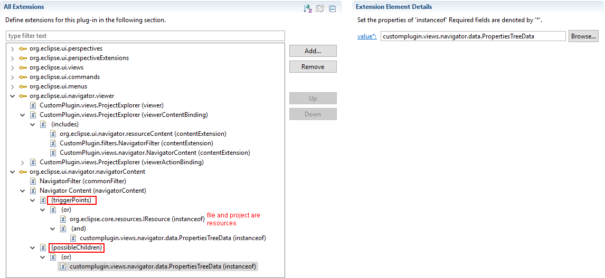
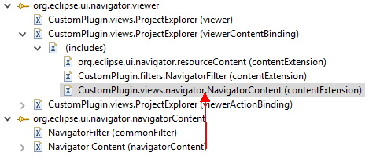
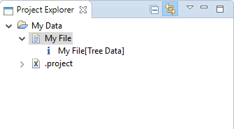

In this section, we will add a child node to "file" in the navigator. To implement, we need a custom data structure as a child node, new content provider, and label provider for the navigator.
1. Create PropertiesTreeData as child node added on the common navigator. We will show the name of it on navigator.
import java.util.UUID;
import org.eclipse.core.resources.IFile;
import org.eclipse.core.resources.IProject;
public class PropertiesTreeData {
// TODO Auto-generated constructor stub
private String name;
private IFile file;
private IProject project;
private String ID = UUID.randomUUID().toString();//make the object unique
public PropertiesTreeData(String name, IFile file, IProject project) {
// TODO Auto-generated constructor stub
this.name = name;
this.file = file;
this.project = project;
}
public String getID(){
return this.ID;
}
public IProject getProject(){
return this.project;
}
public String getName(){
return this.name;
}
/**
* Eclispe will use Set to save the node shown on the navigator. Thus, it is necessary to implement this method.
*/
public int hashCode() {
return ID.hashCode();
}
/**
* The inner code will call this method to find the exact node when the user want to make update to the navigator
*/
public boolean equals(Object obj) {
return obj instanceof PropertiesTreeData
&& ((PropertiesTreeData) obj).getID().equals(ID);
}
}
2. Add navigator content to org.eclipse.ui.navigator.navigatorContent extension. The id of navigator content is CustomPlugin.views.navigator.NavigatorContent. Add content provider and label provider which are customplugin.views.navigator.NavigatorContentProvider and customplugin.views.navigator.NavigatorLabelProvider respectively. Specifically, the content provider controls nodes shown on the navigator while label provider provides text and image to the node. The initialization of providers will be introduced later.
3. Add triggerPoints and possibleChildren to your navigator content. The triggerPoints indicates which type of elements expected to show on the navigator. The possibleChildren indicates which type of elements may be able to provide a label or parent.
For triggerPoints, add org.eclipse.core.resources.IResource and customplugin.views.navigator.data.PropertiesTreeData which means this navigator allows elements in resource or PropertiesTreeData to show.
For possibleChildren, just add customplugin.views.navigator.data.PropertiesTreeData.
4. Add navigator content in last step to the viewerContentBinding as a content extension. This operation will bind the custom navigator content to the common navigator.
5. Now, it¡¯s time to implement the content provider and label provider.
The content provider should implement the ITreeContentProvider which must implement getElements(Object input), getChildren(Object parent), hasChildren(Object element), and getParent(Object element).
The getElements() method searches parent node which can simply call getChildren().
The getChilldren() will accept the object which describes in
For elements as children, the hasChildren() should return true.
import org.eclipse.core.resources.IFile;
import org.eclipse.jface.viewers.ITreeContentProvider;
import org.eclipse.jface.viewers.Viewer;
import customplugin.views.navigator.data.PropertiesTreeData;
public class NavigatorContentProvider implements ITreeContentProvider {
@Override
public void dispose() {
// TODO Auto-generated method stub
}
@Override
public void inputChanged(Viewer viewer, Object oldInput, Object newInput) {
// TODO Auto-generated method stub
}
@Override
public Object[] getElements(Object inputElement) {
// TODO Auto-generated method stub
return getChildren(inputElement);
}
@Override
public Object[] getChildren(Object parentElement) {
// TODO Auto-generated method stub
// if the parent element is IFile, add a PropertiesTreeData as child node
if(parentElement instanceof IFile){
IFile file = (IFile) parentElement;
String name = file.getName() +"[Tree Data]";
PropertiesTreeData propertiesTreeData = new PropertiesTreeData(name, file, file.getProject());
return new Object[]{propertiesTreeData};
}
return null;
}
@Override
public Object getParent(Object element) {
// TODO Auto-generated method stub
return null;
}
@Override
public boolean hasChildren(Object element) {
// TODO Auto-generated method stub
if(element instanceof IFile){
return true;
}
return false;
}
}
The label provider implements org.eclipse.jface.viewers.ILabelProvider and org.eclipse.ui.navigator.IDescriptionProvider.
The getText() and getImage() methods shows name and image shown on the viewer.
import org.eclipse.jface.viewers.ILabelProvider;
import org.eclipse.jface.viewers.LabelProvider;
import org.eclipse.swt.graphics.Image;
import org.eclipse.ui.ISharedImages;
import org.eclipse.ui.PlatformUI;
import org.eclipse.ui.navigator.IDescriptionProvider;
import customplugin.views.navigator.data.PropertiesTreeData;
public class NavigatorLabelProvider extends LabelProvider implements ILabelProvider, IDescriptionProvider{
@Override
public String getText(Object element){
if(element instanceof PropertiesTreeData){
return ((PropertiesTreeData)element).getName();
}
return null;
}
@Override
public Image getImage(Object element){
if(element instanceof PropertiesTreeData){
return PlatformUI.getWorkbench().getSharedImages().getImage(ISharedImages.IMG_OBJS_INFO_TSK);
}
return null;
}
@Override
public String getDescription(Object anElement) {
// TODO Auto-generated method stub
return "This is a tree data";
}
}
6. Result
Create a general project and add a text file named "My File" to it. Then, a child node is added to the file node. This node is that our PropertiesTreeData object.
